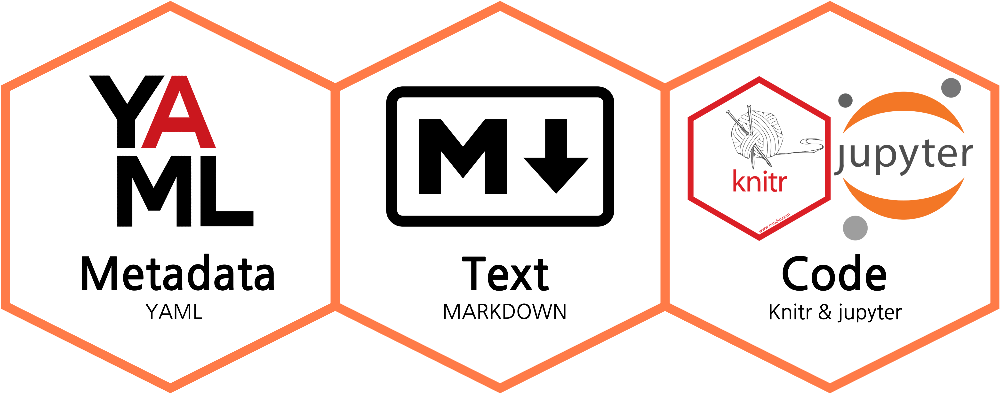

지난 게시물에선 R Markdown의 차세대 포맷, Quarto의 등장 배경에 대해 살펴봤습니다. Quarto를 한 문장으로 정리해 보면 이렇게 이야기할 수 있습니다. Quarto는 “마크다운 등 일반 텍스트 형식(.qmd, .rmd, .md)과 혼합 형식(.ipynb, jupyter notebook)을 pandoc과 knitr 패키지를 통해 PDF/Word/HTML/책/웹사이트/프레젠테이션 등 다양한 형태로 렌더링 하는 명령줄 인터페이스(CLI)다”라고요.
R Studio나 VS code 같은 IDE로 Quarto를 이용하면 Quarto의 CLI의 모습을 엿보기 어렵지만 명령 프롬프트를 이용하면 바로 확인할 수 있습니다. 아래 이미지는 iTerm에서 quarto --help라는 명령어를 입력하면 나오는 Quarto의 개괄입니다.
quarto--help
Usage: quarto
Version: 1.2.313
Description:
Quarto CLI
Options:
-h, --help - Show this help.
-V, --version - Show the version number for this program.
Commands:
render [input] [args...] - Render files or projects to various document types.
preview [file] [args...] - Render and preview a document or website project.
serve [input] - Serve a Shiny interactive document.
create [type] [commands...] - Create a Quarto project or extension
create-project [dir] - Create a project for rendering multiple documents
convert <input> - Convert documents to alternate representations.
pandoc [args...] - Run the version of Pandoc embedded within Quarto.
run [script] [args...] - Run a TypeScript, R, Python, or Lua script.
add <extension> - Add an extension to this folder or project
install [target...] - Installs an extension or global dependency.
publish [provider] [path] - Publish a document or project. Available providers include:
check [target] - Verify correct functioning of Quarto installation.
help [command] - Show this help or the help of a sub-command.
Quarto의 구조
Quarto라는 녀석이 CLI라는 건 그렇게 중요하지 않습니다. 왜냐면 우리가 Quarto를 이용해서 얻고자 하는 건 글을 쓰고, 블로그를 쓰고, 책을 출간하고, 발표자료를 만들려고 하는 거니까요. 그러려면 우선 Quarto 문서(.qmd)를 작성해야 합니다. 이번 게시물에선 Quarto 문서, 그 자체에 집중해서 이야기를 나눠보도록 하겠습니다. 먼저 Quarto 문서가 어떻게 구성되어 있는지 살펴보겠습니다. Quarto 문서는 크게 3가지 요소로 구분할 수 있습니다.

Metadata: YAML header
Text: Markdown
Code: knitr or jupyter
이 세 가지 요소를 잘 버무려서 Quarto 문서를 작성하면 다양한 형태의 콘텐츠를 제작할 수 있습니다. 지금 이 게시물 역시 Metadata와 Text, Code 이렇게 3가지 요소로 만든 qmd 파일을 html로 렌더링 한 거죠.
1. Metadata
먼저 Metadata가 담겨있는 YAML header입니다. 지금 이 게시글의 YAML header는 요런 모습입니다.
---title:'뜯어먹는 Quarto ①YAML'date:'2023-01-08'categories:['R Markdown','Quarto','YAML']description:"YAML Ain't Markup Language"execute:message:falsewarning:falseeditor_options:chunk_output_type: console---
YAML header의 내용을 보면 꽤나 직관적입니다. title에는 게시물 제목이, date에는 작성 시점이, cateogories에는 이 게시물의 카테고리가 표시되어 있죠. YAML header에는 이 문서의 메타데이터를 표시해 줍니다. 메타데이터는 다른 데이터를 설명해 주는 데이터를 뜻합니다. 메타데이터의 메타(Meta)는 about(~에 관하여)과 같은 의미를 갖고 있죠. 이론을 대상으로 하는 이론을 뜻하는 메타이론(metatheory), 수학으로 수학 자체를 연구하는 메타수학(Metamathematics)의 메타와 같아요.
2. Text
두 번째는 텍스트 항목입니다.
## Quarto 뜯어보기지난 게시물에선 R Markdown의 차세대 포맷, Quarto의 등장 배경에 대해 살펴봤습니다.
Quarto에서는 마크업 언어의 일종인 마크다운(Markdown)을 이용해 텍스트를 작성합니다. HTML 문서를 무작정 작성하려고 하면 온갖 다양한 태그를 사용하게 되는데 그걸 일일이 작성하긴 어려우니까요. 마크다운(Markdown)을 이용하면 훨씬 쓰기 쉽고, 읽기 쉬운 형태의 문서를 쓸 수 있습니다.
3. Code
마지막은 코드입니다. R을 사용하는 사람들은 knitr 엔진을, python을 사용하는 사람들은 jupyter 엔진을 활용해 인라인 코드를 작성하고, 시각화를 구현할 수 있습니다. 이런 식으로 말이죠.
세 요소 중에서도 YAML에 대해서 조금 더 이야기를 나눠보도록 하겠습니다. YAML은 Yet Another Markup Language라는 뜻을 가진 마크업 언어입니다. [야믈], [야멜] 등으로 읽을 수 있겠습니다. YAML은 2001년 클라크 에반스가 고안한 언어로 기존의 JSON이 가지고 있는 단점(주석을 달 수 없다, 문법이 유연하지 않다)들을 해소하기 위해 만들어졌습니다.
YAML은 마크업 언어지만 스스로 마크업 언어가 아니라고 이야기합니다. YAML을 또 다르게 풀어보면 YAML Ain’t Markup Language라고도 할 수 있거든요. “YAML은 마크업 문서가 아니다”라고 이야기하는 이유는 바로 YAML의 정체성을 마크업이 아닌 데이터에 두겠다는 거죠. 데이터에 방점을 둔 YAML은 JSON과 XML과 비교해 압도적으로 간결하고 가독성 높은 구조로 만들어졌습니다. 직접 한 번 비교해보시면 그 차이가 느껴질겁니다. 이렇게 간결한 구조는 YAML 문서가 여러 프레임워크에서 설정파일로 자리잡는데 큰 힘이 되었어요.
Quarto도 마찬가지입니다. 서두에서 이야기한 것처럼 YAML header에는 메타데이터가 담겨있습니다. Quarto 문서의 다양한 설정을 YAML header에 담아두면 됩니다. 간단한 구조와 간결한 문법을 활용해서 말이죠. Quarto는 매번 모든 옵션을 수동으로 입력하지 않도록 하기 위해 YAML header를 활용합니다. 입력된 메타데이터들은 최종적으로 퍼블리싱되는 포맷에 영향을 주죠. 퍼블리싱, 렌더링 과정에 참여하는 pandoc, quarto, knitr이 YAML header에 담긴 정보를 읽고 처리합니다.
지금부터는 YAML header에 포함되는 Quarto의 옵션들을 살펴보겠습니다. 우선 가장 기본적인 Output Option입니다. 말 그대로 어떤 결과물을 만들고 싶은지를 선택하는 옵션입니다. 내가 qmd 문서를 HTML로, 혹은 PDF로, 아니면 revealjs 형태로 뽑아내고 싶다면 YAML header의 format 자리에 적어주면 됩니다. format: html 이렇게 말이죠. 참고로 format: html처럼 key값(여기선 format이 해당하겠죠)에 html이라는 value값을 대응시키는 구조를 map형식이라고 합니다.
---format: html---
---format: revealjs---
참고로 원래 YAML에서는 ---로 열고 ...으로 닫는 게 원칙입니다. 하지만 Quarto의 YAML header에선 그것마저도 귀찮았는지 --- 하나로 열고 닫습니다.
추가 옵션을 적으려면 적어놓은 옵션 밑에 주르륵 적으면 됩니다. 다만 하위 옵션을 적을 때에는 상위 옵션의 아랫줄에 적어야 하고 들여 쓰기를 사용해야 합니다. YAML은 들여 쓰기로 계층구조를 표현하거든요. YAML에서 들여 쓰기는 2n(2, 4, 6…) 칸을 지원합니다.
---format:html:toc:true #하위 옵션은 들여 쓰기로code-fold:true---
또 하나 주의해야할 점, 띄어쓰기기나 줄바꿈을 맞추지 않을 경우엔 옵션이 실행되지 않습니다. YAML은 민감한 친구거든요.
---format:html # format과 html 사이에 띄어쓰기가 없기 때문에 작동 X---
---format:html # 들여 쓰기가 없기 때문에 작동 X ---
---format:html: # 들여 쓰기는 했지만 html: 이후 value값이 없어서 작동 X---
제대로 된 YAML 구조는 이렇습니다.
---format: html # format과 html 사이에 띄어쓰기---
---format: html # 들여 쓰기 2칸---
---format:html:toc:true---
R studio를 사용하고 있다면 YAML 문법을 하나하나 외우고 있을 필요는 없습니다. R studio에선 기본적으로 YAML intelligence 기능이 있거든요. 옵션을 자동완성 해주거나, 잘못된 문법이 있을 경우 강조 표시로 오류를 확인할 수 있습니다. YAML intelligence 기능을 사용하려면 Quarto CLI 0.9.44 이상의 버전이어야 합니다.
간단하게나마 HTML format의 옵션을 살펴보겠습니다.
Option
설명
title
문서 제목
subtitle
문서 부제
date
문서 작성 시점
date-modified
문서 편집 시점
author
문서의 작성자
abstract
문서 요약
abstract-title
문서 요약본의 제목
doi
DOI(Digital Object Identifier, 디지털객체식별자) 표시
order
문서의 정렬 순서
위의 표는 HTML format에서 제목과 작성자와 관련된 옵션을 정리한 겁니다. 옵션의 수는 너무나도 많아서 여기에다 정리하긴 어려울 것 같고요. Quarto의 공식 홈페이지를 들어가 보면 HTML option들을 확인할 수 있을 겁니다. 공식 홈페이지에는 HTML뿐 아니라 PDF, MS Word, OpenOffice, ePub, Presentations 등 다양한 포맷들의 option을 정리해두고 있습니다. 주요 포맷들의 option과 guide 링크를 소개하는 것으로 이번 게시물은 마무리하도록 하겠습니다.